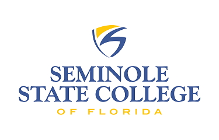

High school was were my decision to be apart of the creative world started. I had no idea what I wanted to go to college for, but I was determined to be the first in my immediate family to graduate college, and make my parents proud. With three months left in high school, I started soul searching to find out what I really enjoyed. With help from google, I found out about Graphic Design field.
When applying to college, my logic was based on two ideas. Stay home, and leave college with the least amount of debt. With this in mind, my two options were Valencia or Seminole State. Being that Seminole was eight minutes away from my house, I decided to go there, in hopes of getting my associate in arts. I loved everything about Seminole! Seminole pushed me out of my element, by introducing me to knew things. As I was getting closer to graduating I had to sit down and be honest with myself. I wanted to go the UCF, but UCF had a competieve drawing portfolio, that I knew I wasn't going to get into. This is when I made the tough decesion to switch fields. I never knew what Digital Media was until I took a photoshop class. Almost everyone in the class was doing Digital Media, and a simple search convinced me to change my career to digital media.
Spring 2021 was my first semester at UCF, and due to the pandemic all of my classes were online. In fact, this fall was my first time at UCF downtown. My journey at UCF so far, has been like a double edged sword. At times I find myself questioning what other Universities have to offer, but every now and then a class or two comes along and changes my mind. My future plan is to stay at UCF, in hopes of graudating in Spring 2023 with my Bachelors in Digital Media- Web Design. With my Bachelors I want to work for a respectable creative company in California.